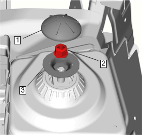
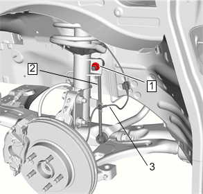
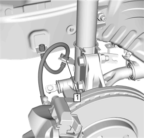
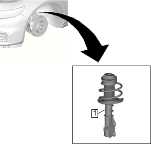

滑柱总成的拆卸和安装
拆卸程序
- 1.打开发动机舱盖。
- 2.进气口格栅板»拆下 –进气口格栅板的更换
-

3.滑柱支座罩 (1)»拆下
- 4.上滑柱支座螺母 (2)»拆下
- 5.滑柱支座板 (3)»拆下
- 6.举升和顶起车辆。举升和顶起车辆
- 7.前轮轮胎和车轮总成»拆下 –轮胎和车轮的拆卸和安装
-

8.稳定杆连杆螺母 (1) @滑柱»拆下
- 9.稳定杆连杆 (2) »断开
- 10.前轮速传感器 (3) @滑柱支架»拆下
-

11.制动软管 (1) @滑柱支架»拆下
-
12.转向节螺母(1)»拆下[2x]
- 13.转向节螺栓 (2)»拆下[2x]
- 14.滑柱@转向节»断开
-

15.将滑柱总成(1)从车辆上拆下。
安装程序
-
1.滑柱总成(1)»安装
-
2.将滑柱插入转向节。
- 3.转向节螺栓 (2)»安装[2x]
-
4.转向节螺母(1) »安装[2x]
紧固
- • 第一遍：115N•m（85 lb ft）
- • 最后一遍：30–45度
-
5.制动软管 (1) @滑柱»安装
-
6.连接稳定杆连杆 (2)。
- 7.稳定杆连杆螺母 (1)»安装并紧固65N•m（48 lb ft）
- 8.前轮速传感器 (3) @滑柱»安装
-
9.滑柱支座板 (3)»安装
- 10.上滑柱支座螺母 (2)»安装并紧固65N•m（48 lb ft）
- 11.滑柱支座罩 (1)»安装
- 12.进气口格栅板»安装 –进气口格栅板的更换
- 13.前轮胎和车轮总成»安装 –轮胎和车轮的拆卸和安装
- 14.降下车辆。